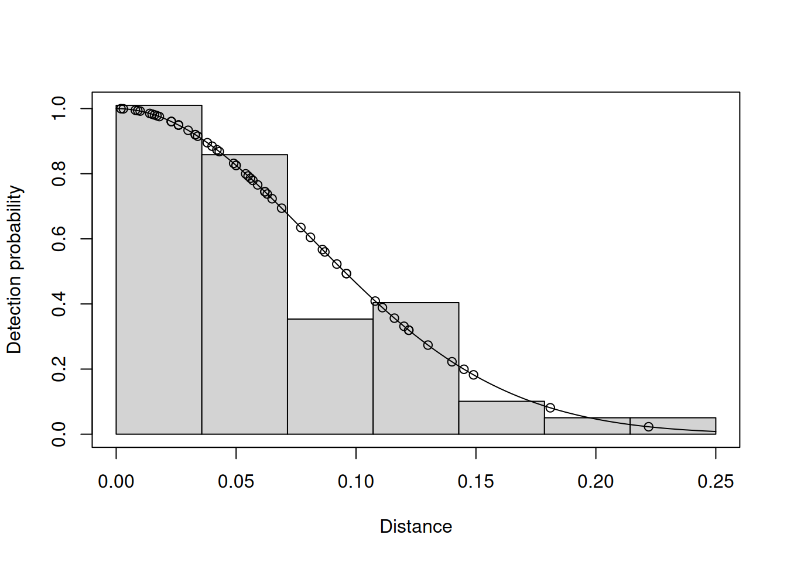

install.packages("Distance")Distance Sampling Lab
Due by 5:00pm on Friday
The purpose of this lab is to learn how to use the R package ‘Distance’ to estimate abundance and density. You will do this by analyzing fake data on Mongolian gazelle (Procapra gutturosa). The data are fake, but they are based loosely on the study that we discussed in lecture. Note that gazelles were detected in groups (ie, herds), and the distance data are distances to group centers.
Put your code and your answers in a Word file1 and upload it to ELC.
Assignment – Half-normal and hazard-rate models
- Download the gazelle data, open R, and then set your working directory (
Session > Set Working Directory) to the location where you put the data. - Import the gazelle data in the file
"GazelleFakeData.txt". Note that:- Every row corresponds to a detection of a large herd.
- The number of individuals in each herd is found in the
GroupSizecolumn. - The R package “Distance” will estimate the Abundance of herds as well as the abundance of individuals.
- All 10 transects were 100 m long, and herds were detected out to 250 m (on both sides of the transect).
- The area surveyed was therefore 10 \(\times\) 100 m \(\times\) 500 m = 0.5 km\(^2\), which is one-tenth of the entire study area (5 km\(^2\)).
- Format the data for the R package “Distance” as described in the next section.
- Run two models, one with the half-normal detection function, and another with the hazard-rate detection function.
- Create a table in Word to compare the two models. The table should have a row for each model. The column names should be:
Model, pbar, Abundance, SE(N), Density, SE(D), AIC. The twoSEcolumns are for the standard errors of abundance and density. Report total abundance and density, not herd abundance and density. - Create a figure with the two graphs of the detection functions side-by-side.
R package “Distance” – Example analysis
Open RStudio and install the package using the following command:
Several other packages will be installed during the process. Now load the package:
library(Distance)Before we can do any analysis, we need to import the data. Make sure that the file ExampleData.txt is in your working directory.
getwd() ## Location on your computer where R will look for files[1] "/home/rchandler/courses/applied-popdy/labs/distance"list.files() ## You should see 'ExampleData.txt' here[1] "auto" "ExampleData.txt" "figure"
[4] "lab-distance-R.aux" "lab-distance-R.log" "lab-distance-R.pdf"
[7] "lab-distance-R.Rnw" "lab-distance.qmd" "lab-distance.rmarkdown"If you need to change your working directory, you can use the dropdown menu options (Session > Set Working Directory), or using the setwd command.
Once you have specified your working directory, you can import the example data. The data file is a tab-separated text file instead of a comma-seperated text file like we used last week:
exampleData <- read.table("ExampleData.txt", header=TRUE, sep="\t")The structure of the data can be assessed like this:
str(exampleData)'data.frame': 56 obs. of 5 variables:
$ Transect : int 1 1 1 1 1 1 1 1 1 2 ...
$ Distance : int 23 23 17 40 87 77 50 62 3 33 ...
$ GroupSize : int 744 727 724 748 749 771 748 764 732 757 ...
$ TransectLength: int 100 100 100 100 100 100 100 100 100 100 ...
$ RegionArea : int 5 5 5 5 5 5 5 5 5 5 ...We have to reformat the data to meet the requirements of the Distance package. The code below creates a new data frame, renames the columns, and converts the units to kilometers.
exampleData2 <- exampleData[,c("Transect", "GroupSize")]
colnames(exampleData2) <- c("Sample.Label", "size") ## Rename
exampleData2$distance <- exampleData$Distance / 1000 ## Convert to km
exampleData2$Region.Label <- 1 ## Just one region
exampleData2$Effort <- exampleData$TransectLength / 1000 ## Convert to km
exampleData2$Area <- exampleData$RegionArea ## Square kmThe distance sampling model can be fitted to the data using the ds function. The key argument specifies the detection function. You could switch from the half-normal to the hazard-rate function using: key="hr". When you run the hazard-rate model, you will get estimates of two parameters, not just sigma (\(\sigma\)). The truncation argument indicates that we didn’t record data beyond 250 m (0.25 km).
model.hn <- ds(data=exampleData2, key="hn",
transect="line", truncation=250/1000,
adjustment=NULL, quiet=TRUE)Once you have fitted the model, you can obtain the parameter estimates using the following command:
summary(model.hn)The output is organized in three categories:
- Summary for distance analysis
- The estimate of the scale parameter \(\sigma\) and average detection probability \(\bar{p}\) are in this section.
- The scale parameter is estimated on the natural log scale, but it can be transformed to the original scale with the exponential function, for example using code like this:
exp(-2.51).
- Summary for clusters
- This has estimates of herd abundance and density.
- Summary for individuals
- This has estimates of total abundance and density.
To view the estimated detection function, do this:
plot(model.hn)
Footnotes
Feel free to use R Markdown↩︎